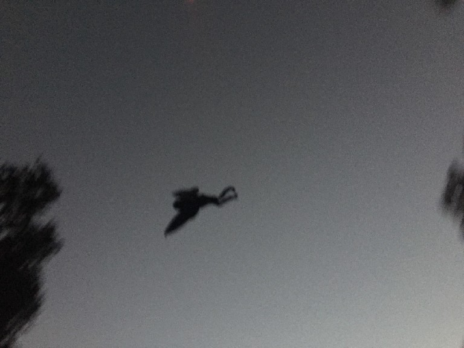

Welcome to The Sign of the Times
Stay in the know with the latest local news and delve into the mysteries that surround us. From cryptids to conspiracies, we cover it all.
Popular Stories
Mystery Shipments to the Mothman Museum
Strange over night shipments to the Mothman Museum beg the question: what kind of cargo does such a building require? Especially at odd hours... Join me for an investigation into the cocaine dealers operating in our little town.
Green Triangle Doors
What is the Green Triangle and why does it appear around strange activity? Several Green Triangles have been spotted in the local area on unassociated doors. What does it stand for and what could it signify?
Black Budget Medical Experiments
Insider information has leaked that the CIA is distributing black budget money to the Orbrite Research Foundation, known for their cutting-edge medical advancements. What alertnative goals do the CIA have in funding such advanced medical experimentation?
Latest Post: The Mothman Returns
Recent sightings of the infamous Mothman have stirred up old fears and new investigations. Is it a harbinger of doom or just a myth? Read more...
About the Author
Written by James Dean, a local journalist with a passion for uncovering the truth behind the unexplained. James has been reporting on cryptids and conspiracies for over a decade, digging into the hidden world beyond our vision. You can find more of his work here:
Instagram: @wanderlustwv
Youtube: @jamesdeanhiddentruth
X: @jamesdeanhiddentruth
Got Mail?
James DeanSign of the Times
PO Box 1033
Point Pleasant, WV